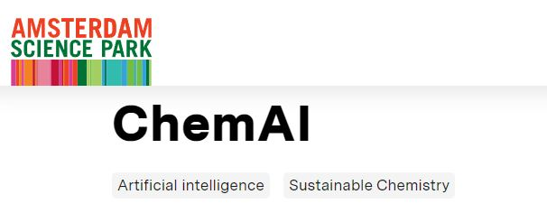
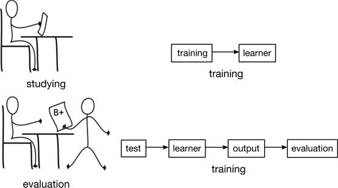
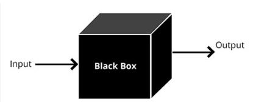
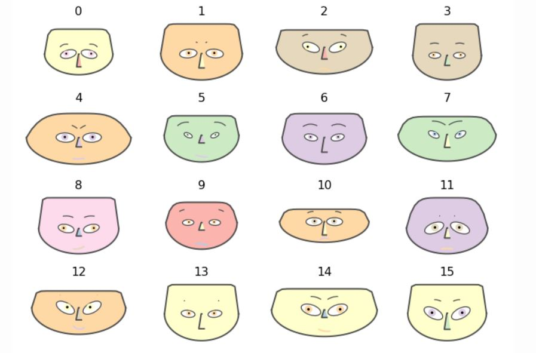

Training, Testing, Techniques#
Before discussing, it’s important to note that AI is widely used across various scientific fields, each employing different tools to enhance research and applications.
List of scientific fields with corresponding AI tools commonly used:
Biology and Bioinformatics
Tool: AlphaFold
Description: Predicts protein structures from amino acid sequences.
Chemistry
Tool: ChemAI

Description: Uses machine learning to predict chemical reactions and properties.
Medicine and Healthcare
Tool: IBM Watson Health
Description: Analyzes medical data to assist in diagnostics and treatment planning.
Astronomy
Tool: AstroML
Description: Machine learning for analyzing astronomical data.
Environmental Science
Tool: ClimateAI
Description: Predicts climate changes and environmental impacts using AI.
Neuroscience
Description: Simulates large networks of spiking neurons for brain research.
Genomics
Tool: DeepVariant
Description: Uses deep learning to call genetic variants from sequencing data.
Material Science
Tool: Matminer
Description: Facilitates data mining for material properties and predictions.
Economics and Finance
Tool: H2O.ai
Description: Machine learning platform for financial modeling and predictions.
Agriculture
Tool: FarmBot
Description: Uses AI to automate and optimize agricultural practices.
Linguistics
Tool: GPT-4
Description: Language model for natural language processing tasks.
Geology
Tool: EarthAI
Description: AI-driven exploration for mineral deposits and geological formations.
Training#
Training is the process of teaching the model to recognize patterns and make predictions by using a dataset. During training, the model learns by adjusting its parameters to minimize the difference between its predictions and the actual outcomes.
Testing#
Testing evaluates the model’s performance on a separate, unseen dataset, known as the test set. Testing involves running the model on the test data and comparing its predictions to the actual outcomes to measure accuracy, precision, recall, and other performance metrics.

Why might a score of 18 be better than a 20? Understanding Overfitting in Student Assessments: Memorization vs. Deep Understanding Overfitting in student assessments can be likened to memorization versus deep learning. A student scoring 18 may demonstrate a deeper understanding and application of knowledge compared to a student scoring 20, who might have excelled through rote memorization. Memorization might lead to higher test scores but does not always reflect genuine comprehension. Thus, a score of 18 could indicate a more profound grasp of the subject compared to a perfect score of 20, which might not necessarily signify a deeper understanding. Evaluations should account for both memorization and true comprehension to accurately reflect a student’s abilities.
AI Techniques and Fields Outline#
Natural Language Processing (NLP)
Understanding and Generating Human Language
Computer Vision
Interpreting Visual Information from Images and Videos
Machine Learning (ML)
Learning from Data to Make Predictions or Decisions
Deep Learning
Modeling Complex Patterns with Deep Neural Networks
Robotics
Designing and Building Autonomous or Semi-Autonomous Machines
Reinforcement Learning
Learning through Rewards and Penalties
Planning and Scheduling
Creating Action Sequences and Allocating Resources
Knowledge Representation and Reasoning
Encoding Information and Drawing Conclusions
AI Ethics and Fairness
Ensuring Ethical and Fair Use of AI Systems
Swarm Intelligence
Utilizing Collective Behavior for Problem Solving
Process Mining
Analyzing Business Processes Using Event Data
Speech Processing
Analyzing and Synthesizing Human Speech
Anomaly Detection
Identifying Outliers and Abnormal Patterns in Data
Recommendation Systems
Providing Personalized Suggestions Based on User Data
Generative Models
Creating New Data Samples from Existing Data (e.g., GANs)
Human-Computer Interaction (HCI)
User Interface Design: Creating Intuitive Interfaces for User Interaction Enhancing User Experience: Designing Interactions Between Humans and AI Systems
Internet of Things (IoT)
Smart Devices: Integrating AI with IoT Devices for Intelligent Behavior Connected Systems: Enabling Communication and Coordination Among Devices
Explainable AI (XAI)
Model Interpretability: Techniques for Making AI Models’ Decisions Transparent (e.g., LIME, SHAP)
Visualization Tools: Tools for Visualizing and Interpreting AI Models’ Behavior
Augmented Reality (AR) and Virtual Reality (VR)
AI in AR/VR: Enhancing Experiences with Object Recognition and Immersive Simulations
Metaverse Integration: Leveraging AI for Virtual Worlds and Augmented Experiences
Natural Language Processing (NLP)#
Definition:
Natural Language Processing (NLP) : understand, interpret, and generate human language
NLP can be used to each fields of science !!
Ingredients of NLP#
Tokenization
Definition: Breaking down text into individual units, such as words, phrases, or symbols, called tokens.
Example: Breaking the sentence “NLP is fascinating!” into tokens: [“NLP”, “is”, “fascinating”, “!”].
Lemmatization
Definition: Reducing words to their base or root form (lemma) to ensure that different forms of the word are treated as the same.
Example: The words “running,” “ran,” and “runs” are all reduced to the lemma “run.”
Stemming
Definition: Trimming words to their root form by removing prefixes or suffixes.
Example: “running” and “runner” might both be reduced to “run.”
Part-of-Speech (POS) Tagging
Definition: Identifying the grammatical category of each word in a sentence, such as nouns, verbs, adjectives, etc.
Example: In the sentence “The cat sat on the mat,” POS tagging might label “cat” as a noun and “sat” as a verb.
Named Entity Recognition (NER)
Definition: Identifying and classifying named entities in text into predefined categories like person names, locations, organizations, dates, etc.
Example: In the sentence “Apple Inc. is based in Cupertino,” NER might identify “Apple Inc.” as an organization and “Cupertino” as a location.
Parsing
Definition: Analyzing the grammatical structure of a sentence to understand the relationships between words and phrases.
Example: Parsing “The quick brown fox jumps over the lazy dog” to determine the syntactic structure.
Sentiment Analysis
Definition: Determining the emotional tone or sentiment expressed in a piece of text, such as positive, negative, or neutral.
Example: Input: “I love Sardar Soleimani” Output: Positive
Machine Translation
Definition: Automatically translating text from one language to another.
Example: Translating “Hello, how are you?” from English to French as “Bonjour, comment ça va?”
Text Summarization
Definition: Creating a concise summary of a longer text while preserving key information and meaning.
Example: Summarizing a news article into a few sentences capturing the main points.
Word Embeddings
Definition: Representing words as vectors in a continuous vector space to capture semantic meanings and relationships.
Example: Using embeddings like Word2Vec or GloVe to represent “king” and “queen” in a vector space where their relationship is captured.
Deep Learning in NLP
Definition: Utilizing neural networks with multiple layers to model complex patterns in text data.
Example:
Recurrent Neural Networks (RNNs): Handling sequences of text, such as in language modeling or machine translation.
Transformers: Models like BERT and GPT that capture long-range dependencies and contextual meanings in text.
Simple Word2Vec Example with Gensim#
Word2Vec is a deep learning algorithm that generates vector representations of words by training on a large corpus of text, capturing semantic similarities based on the context in which words appear. Word2Vec is a powerful feature extractor for natural language processing tasks
For the Persian language, you can read this site. It explains word2vec in Farsi.
Example Sentence: “In nature, flowers bloom beautifully, adding color and joy to the peaceful surroundings of the outdoors.”
Sliding Window Size: 3 We will extract examples where each target word is predicted based on its surrounding context words.
Training Data Table
Target Word |
Context Words (Input) |
Example Input ( |
Example Output ( |
|---|---|---|---|
flowers |
In, nature |
[“In”, “nature”] |
flowers |
flowers |
nature, bloom |
[“nature”, “bloom”] |
flowers |
bloom |
nature, flowers |
[“nature”, “flowers”] |
bloom |
bloom |
flowers, beautifully |
[“flowers”, “beautifully”] |
bloom |
beautifully |
flowers, bloom |
[“flowers”, “bloom”] |
beautifully |
beautifully |
bloom, adding |
[“bloom”, “adding”] |
beautifully |
adding |
bloom, beautifully |
[“bloom”, “beautifully”] |
adding |
adding |
beautifully, color |
[“beautifully”, “color”] |
adding |
color |
beautifully, adding |
[“beautifully”, “adding”] |
color |
color |
adding, and |
[“adding”, “and”] |
color |
and |
adding, color |
[“adding”, “color”] |
and |
and |
color, joy |
[“color”, “joy”] |
and |
joy |
color, and |
[“color”, “and”] |
joy |
joy |
and, to |
[“and”, “to”] |
joy |
to |
and, joy |
[“and”, “joy”] |
to |
to |
joy, the |
[“joy”, “the”] |
to |
the |
joy, to |
[“joy”, “to”] |
the |
the |
to, peaceful |
[“to”, “peaceful”] |
the |
peaceful |
to, the |
[“to”, “the”] |
peaceful |
peaceful |
the, surroundings |
[“the”, “surroundings”] |
peaceful |
surroundings |
the, peaceful |
[“the”, “peaceful”] |
surroundings |
surroundings |
peaceful, of |
[“peaceful”, “of”] |
surroundings |
of |
peaceful, surroundings |
[“peaceful”, “surroundings”] |
of |
of |
surroundings, the |
[“surroundings”, “the”] |
of |
the |
surroundings, of |
[“surroundings”, “of”] |
the |
the |
of, outdoors |
[“of”, “outdoors”] |
the |
outdoors |
of, the |
[“of”, “the”] |
outdoors |
The input and output are fed into the model, and after the model is trained, the ‘black box’ can predict words related to the input word.

Computer vision#
Computer Vision allows computers to “see” and understand images or videos. It involves techniques that enable machines to process, analyze, and make sense of visual data.
Image Processing#
We started with image processing by looking at examples of digit recognition. First, what is a digit from the perspective of a camera? As shown below, each image we see is in the form of a matrix that affects the cells in our eyes. Similarly, a camera functions like an eye. The output of the camera is a matrix that looks as follows:
import numpy as np
import matplotlib.pyplot as plt
from sklearn.datasets import fetch_openml
# Load the MNIST dataset using scikit-learn
mnist = fetch_openml('mnist_784', version=1)
images = mnist.data.to_numpy().reshape(-1, 28, 28)
labels = mnist.target.astype(int).to_numpy()
# Print the shapes of the datasets
print(f"Data shape: {images.shape}")
print(f"Labels shape: {labels.shape}")
print(f"Shape of a single image: {images[0].shape}")
# Function to display a small part of the image and its pixel matrix
def display_digit_and_matrix(image, label, top_left, size):
# Extract the small part of the image
top, left = top_left
bottom = top + size
right = left + size
small_part = image[top:bottom, left:right]
plt.figure(figsize=(12, 6))
# Display the original image
plt.subplot(1, 2, 1)
plt.imshow(image, cmap='gray')
plt.title(f"Digit: {label}")
plt.axis('off')
# Display the small part of the image
plt.subplot(1, 2, 2)
plt.imshow(small_part, cmap='gray', vmin=0, vmax=255)
plt.title(f"Pixel Matrix ({size}x{size})")
plt.axis('off')
# Print pixel values of the small part
print("Pixel values of the small part:")
print(small_part)
plt.show()
# Define parameters for the small part of the image
top_left = (10, 10) # Top-left corner of the small part
size = 10 # Size of the small part (10x10)
# Display the first image in the dataset with a small part
display_digit_and_matrix(images[0], labels[0], top_left, size)
---------------------------------------------------------------------------
ModuleNotFoundError Traceback (most recent call last)
Cell In[1], line 1
----> 1 import numpy as np
2 import matplotlib.pyplot as plt
3 from sklearn.datasets import fetch_openml
ModuleNotFoundError: No module named 'numpy'
We have 70,000 digit images, each of which is 28x28 pixels. We directly feed them to the learning module.
import numpy as np
import matplotlib.pyplot as plt
from sklearn.datasets import fetch_openml
from sklearn.naive_bayes import GaussianNB
from sklearn.model_selection import train_test_split
from sklearn.metrics import accuracy_score, confusion_matrix, ConfusionMatrixDisplay
# Load the MNIST dataset
mnist = fetch_openml('mnist_784', version=1)
images = mnist.data
labels = mnist.target.astype(int)
# Split the dataset into training and testing sets
X_train, X_test, y_train, y_test = train_test_split(images, labels, test_size=0.2, random_state=42)
# Initialize the Gaussian Naive Bayes classifier
gnb = GaussianNB()
# Train the classifier
gnb.fit(X_train, y_train)
# Predict on the test set
y_pred = gnb.predict(X_test)
# Compute accuracy
accuracy = accuracy_score(y_test, y_pred)
print(f"Accuracy: {accuracy:.2f}")
# Compute confusion matrix
conf_matrix = confusion_matrix(y_test, y_pred)
# Display confusion matrix
disp = ConfusionMatrixDisplay(confusion_matrix=conf_matrix, display_labels=gnb.classes_)
disp.plot(cmap=plt.cm.Blues)
plt.title('Confusion Matrix for MNIST Digit Recognition using Gaussian Naive Bayes')
plt.show()
Accuracy: 0.55
We see an accuracy of 0.55, or an error rate of 45%. This is a problem we must address by selecting suitable features and a machine learning model that yields better results.
With a change of model, we obtained 76% accuracy.
import numpy as np
import matplotlib.pyplot as plt
from sklearn.datasets import fetch_openml
from sklearn.model_selection import train_test_split
from sklearn.decomposition import PCA
from sklearn.linear_model import SGDClassifier
from sklearn.metrics import accuracy_score, confusion_matrix, ConfusionMatrixDisplay
# Load the MNIST dataset
mnist = fetch_openml('mnist_784', version=1)
images = mnist.data
labels = mnist.target.astype(int)
# Split the dataset into training and testing sets
X_train, X_test, y_train, y_test = train_test_split(images, labels, test_size=0.2, random_state=42)
# Apply PCA for feature extraction
pca = PCA(n_components=10) # Reduce to 10 components for faster computation
X_train_pca = pca.fit_transform(X_train)
X_test_pca = pca.transform(X_test)
# Initialize the SGDClassifier
sgd = SGDClassifier(max_iter=1000, tol=1e-3, random_state=42)
# Train the classifier
sgd.fit(X_train_pca, y_train)
# Predict on the test set
y_pred = sgd.predict(X_test_pca)
# Compute accuracy
accuracy = accuracy_score(y_test, y_pred)
print(f"Accuracy: {accuracy:.2f}")
# Compute confusion matrix
conf_matrix = confusion_matrix(y_test, y_pred)
# Display confusion matrix
disp = ConfusionMatrixDisplay(confusion_matrix=conf_matrix, display_labels=sgd.classes_)
disp.plot(cmap=plt.cm.Blues)
plt.title('Confusion Matrix for MNIST Digit Recognition using SGD with PCA')
plt.show()
Accuracy: 0.76
Machine learning#
Machine learning can be understood from the perspective of function estimation, where the goal is to find a function \( f \) that best maps input data \( x \) to output data \( y \). This is similar to fitting a function in traditional regression analysis, such as a linear function \( f(x) = ax + b \). Where:
\( a \) is the slope of the line.
\( b \) is the y-intercept. a , b are estimated by machine learning module.
Simple example:
Assume that we have the price of gold per gram and we estimate the price of oil using a linear function \( f(x) = ax + b \). We have 20 samples.
import numpy as np
import matplotlib.pyplot as plt
# Step 1: Generate synthetic data
np.random.seed(0) # For reproducibility
gold_price = np.linspace(30, 50, 20) # Gold prices in some unit
true_a = 1.5 # True slope
true_b = 10 # True intercept
noise = np.random.normal(0, 2, gold_price.shape) # Random noise
oil_price = true_a * gold_price + true_b + noise # Linear relationship with noise
# Step 2: Estimate the parameters using linear regression
A = np.vstack([gold_price, np.ones_like(gold_price)]).T
estimated_a, estimated_b = np.linalg.lstsq(A, oil_price, rcond=None)[0]
# Step 3: Visualize the original data and the estimated linear function
plt.figure(figsize=(10, 6))
plt.scatter(gold_price, oil_price, color='blue', label='Original Data')
plt.plot(gold_price, estimated_a * gold_price + estimated_b, color='red', label='Estimated Linear Function')
plt.xlabel('Gold Price (per gram)')
plt.ylabel('Oil Price (estimated)')
plt.title('Gold Price vs. Estimated Oil Price')
plt.legend()
plt.show()
print(f"Estimated parameters: a = {estimated_a:.2f}, b = {estimated_b:.2f}")
Estimated parameters: a = 1.39, b = 15.69
In the case of the MNIST dataset, each image is represented as a vector of 784 elements (28x28 pixels). One of the tools in machine learning is visualization. For visualization purposes, in the following example, we reduce the 784-dimensional data to 2 dimensions using a subset of 200 samples. This reduction results in some loss of information, and the remaining features may not effectively distinguish between classes.
import numpy as np
import matplotlib.pyplot as plt
from sklearn.datasets import fetch_openml
from sklearn.decomposition import PCA
from sklearn.preprocessing import StandardScaler
# Load MNIST dataset
mnist = fetch_openml('mnist_784')
X = mnist.data
y = mnist.target.astype(float)
# For demonstration, use a smaller subset of the data
X_subset = X[:200] # Take first 2000 samples for quicker plotting
y_subset = y[:200]
# Standardize the data
scaler = StandardScaler()
X_scaled = scaler.fit_transform(X_subset)
# Apply PCA to reduce dimensions from 784 to 2
pca = PCA(n_components=2)
X_pca = pca.fit_transform(X_scaled)
# Plot the 2D PCA result
plt.figure(figsize=(10, 8))
scatter = plt.scatter(X_pca[:, 0], X_pca[:, 1], c=y_subset, cmap='viridis', alpha=0.5, s=10)
plt.colorbar(label='Digit Label')
plt.xlabel('Principal Component 1')
plt.ylabel('Principal Component 2')
plt.title('2D PCA of MNIST Digits')
plt.show()
Chernoff Faces is method for data visualization.
Chernoff Faces:#
This technique represents multivariate data using facial features. Each variable corresponds to a different facial feature (e.g., eyes, nose, mouth), allowing for the visualization of complex datasets in a human-understandable format. ( see https://gist.github.com/aflaxman/4043086). Also you can use https://pypi.org/project/ChernoffFace/
Results: 